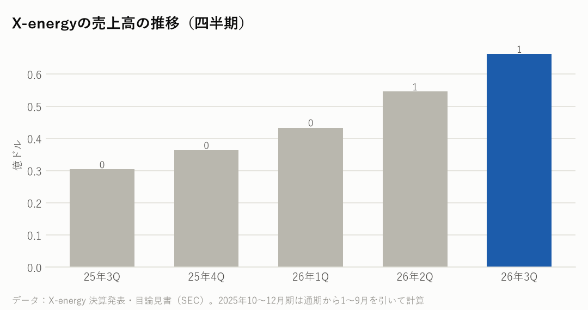
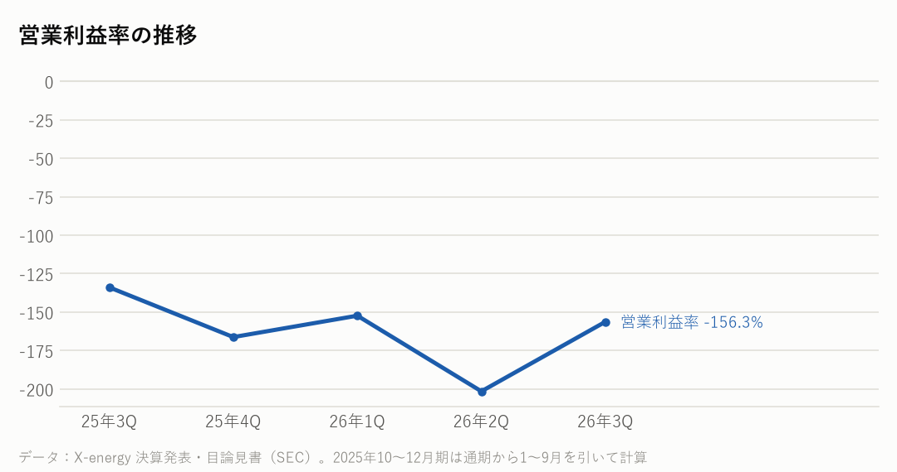

XE｜2026年7〜9月期の決算｜決算発表 2026年11月12日（米国時間、取引開始前）
X-energyの決算：売上は2倍以上なのに、なぜ営業赤字は広がった？――国の実証事業の作業と、上場のあとの株の報酬
小型原子炉（SMR）の X-energy の7〜9月期は、売上と補助金が前年同期比118%増の6,634万ドルで、市場予想（約6,010万ドル）を上回った。一方、営業損失は1億360万ドルと、前年同期の4,070万ドルから広がった。高温ガス炉のSMRを開発する米国の大手の1社で、NRCの建設許可をとった数少ないSMRの会社の1つ。11月には、化学大手のダウ（Dow Inc.）がテキサス州の工場に原子炉を置く計画が米原子力規制委員会（NRC）の建設許可を得た。高温ガス炉の建設許可は約60年ぶりと会社は説明している。
主な数字（2026年7〜9月期）
| 今回 | 前年同期 | 前年比 | |
|---|---|---|---|
| 売上高 | 0.7億ドル | 0.3億ドル | +118.1% |
| 営業利益 | -1.0億ドル | -0.4億ドル | 赤字が拡大 |
| 営業利益率 | -156.3% | -133.9% | |
| 純利益 | -0.8億ドル | -2.2億ドル | 赤字が縮小 |
1〜9月の累計
| 項目 | 金額 | 前年同期比 |
|---|---|---|
| 売上と補助金 | 1億6,440万ドル | +126.0% |
| 営業損失 | 2億7,970万ドル（前年同期は1億980万ドル） | ― |
| 現金と投資の合計（9月末） | 18.1億ドル（借入金はゼロ） | ― |

会社の見通し
| 業績の数字の見通し | 出していない |
|---|---|
| 最初の原子炉の引き渡し | 2030年代のはじめ（会社の計画） |
| 化学大手ダウのテキサス州の計画 | 2027年に投資判断の見込み。建設許可は11月に取得 |
| 計画中の原子炉（パイプライン） | 144基・約1,150万kW（顧客がすべての権利を使った場合） |
- 会社は、売上や利益の数字の見通しを出していない。
- 最初の原子炉の引き渡しは2030年代のはじめという計画を続けている。ダウは2027年に最初の投資判断をする見込み。
- 9月末の現金と投資は合わせて18.1億ドルで、借入金はない。7〜9月期に営業の活動で出ていった現金は5,120万ドル。
もうけの力

同業の小型原子炉（SMR）の会社と比べると
期間は2026年7〜9月。利益率は営業利益率。各社の決算発表と決算の報道から。どの会社もまだ原子炉を売っておらず、売上は小さいので、売上の中身と赤字の大きさを見てください。
| 会社 | 売上高 | 前年比 | 利益率 |
|---|---|---|---|
| X-energy | 6,634万ドル※1 | +118% | −156% |
| ニュースケール | 28万ドル | −97% | —※2 |
| オクロ | 186万ドル※3 | — | —※3 |
原子炉の方式が違う。X-energyは高温ガス炉（燃料は小さな粒を包んだTRISO燃料）、ニュースケールは小型の軽水炉、オクロは小型の高速炉。※1 売上には、米エネルギー省の実証事業（ARDP）の作業の売上と、国の補助金（1,478万ドル）が入る。※2 売上がごく小さいため、利益率は意味のある数字にならない（営業損失は6,482万ドル）。※3 オクロは決算の発表文に数字がなく、売上は報道（Earnings Whispers）による。営業損益は確認できなかった。テラパワー、カイロス・パワーは上場していないため載せていない。
NasdaqWhy の視点：データから読み取れる注目点
決算資料と各社の公式データを並べて読み取れることです。将来を予想するものではありません。
- 【なぜ売上が増えたか】売上の多くは、まだ原子炉の販売ではない。米エネルギー省の実証事業（ARDP）で、ダウの計画の設計・準備の作業が進み、その分の売上が2,930万ドル増えた。売上6,634万ドルのうち、作業などの売上が5,157万ドル、国の補助金が1,478万ドル。
- 【なぜ営業赤字が広がったか】費用の合計は1億6,990万ドルで、売上の2.6倍。実証事業のための外注・材料・人の費用が増えた（直接の費用は5,470万ドル増）。さらに、上場のときに社員などに渡した株の報酬（現金は出ていかない費用）が増え、7〜9月期の株の報酬は合わせて2,690万ドルだった。
- 【なぜ純損失は前年より小さいか】純損失は8,370万ドルで、前年同期の2億1,900万ドルより小さい。前年同期は、ワラント（株を買う権利）の値上がりで1億6,640万ドルの損失を計上していたため。上場でワラントはなくなった。本業の赤字はむしろ広がっている。
- 【なぜ原子炉の売上はまだないか】原子炉は、許可・投資判断・建設に長い時間がかかる。ダウの計画（Xe-100を4基、1基8万kW）は建設許可を得たが、本格的な建設はダウの最終的な投資判断のあと。会社は最初の引き渡しを2030年代のはじめとしている。
- 燃料の工場（テネシー州のTX-1）は、7〜9月期に建物の工事を予定どおり終え、中の設備の工事に進む。年に約70万個の燃料の球を作り、Xe-100を最大11基動かせる量としている。
- 【同業と比べると】ニュースケールは7〜9月期の売上が28万ドルと前年同期（824万ドル）から大きく減り、営業損失は6,482万ドル。オクロの売上は186万ドル（報道）。X-energyは国の実証事業があるぶん売上は大きいが、営業赤字も大きい。原子炉の方式が違い、どの会社もまだ原子炉を売っていないため、売上の大きさだけで比べられない。
- 主な顧客の計画：化学大手ダウ（テキサス州）、アマゾンとエナジー・ノースウエスト（ワシントン州）、AEPとアマゾン（インディアナ州、12基で96万kWの案）、英国のセントリカ。英国では設計の審査（約3年の見込み）に入った。
- データセンターの電力が足りなくなる中、アマゾンなどのIT企業が原子力に出資している。SMRは、半導体のサプライチェーンでは、AIのデータセンターを動かす電力の段にあたる。
次に確認したい決算・予定
- 化学大手ダウの投資判断（2027年の見込み）：テキサス州の4基の建設が本格的に始まるか。
- オクロ・ニュースケールの次の決算（2027年2〜3月の見込み）：同業の建設の進み方。
- X-energyの次の決算（2027年3月ごろの見込み）：費用の増え方と、新しい顧客の契約。
関連リンク
出典：X-energy 2026年7〜9月期の決算発表（2026年11月12日、SEC 8-K）・四半期報告書（10-Q）、1〜3月期・4〜6月期の決算発表、上場の目論見書（424B4、2026年4月）、2026年11月9日の Dow との計画の発表、決算の報道（24/7 Wall St.、Grafa）。同業はニュースケール（2026年11月5日発表）・オクロ（11月6日発表）の決算の報道（Greenstock News、Earnings Whispers/finviz）
📝 note でも読めます（図つき・まとめ）：note.com/nasdaqwhy